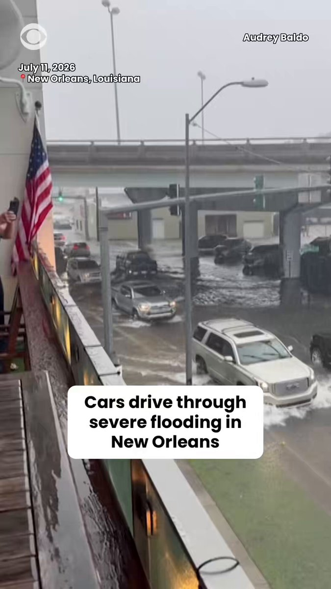
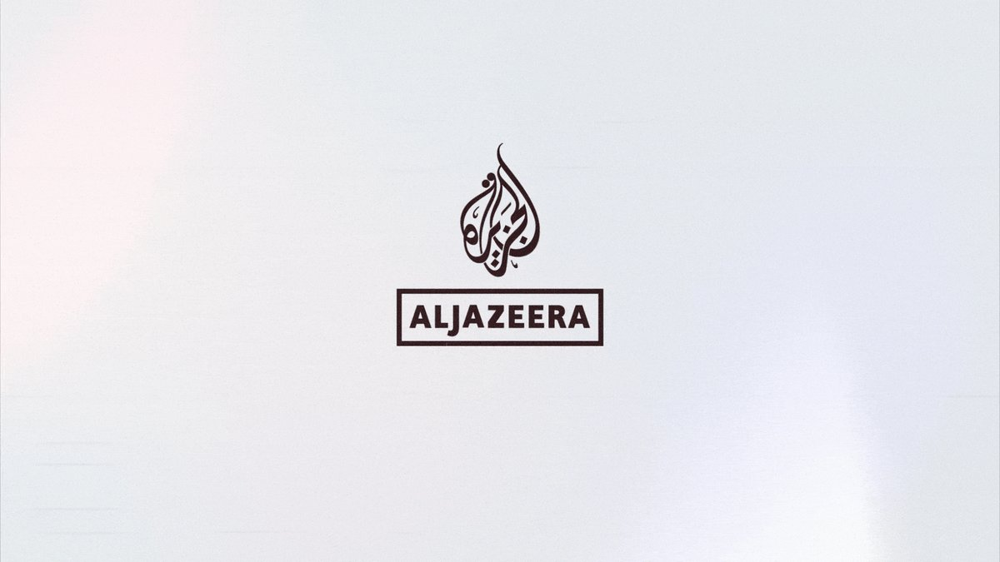
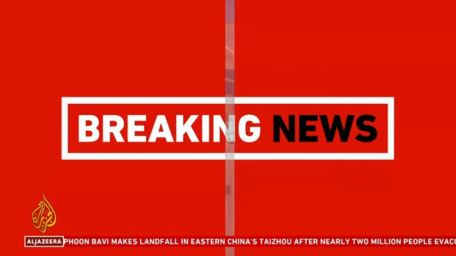
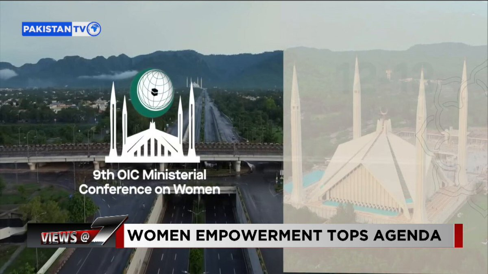
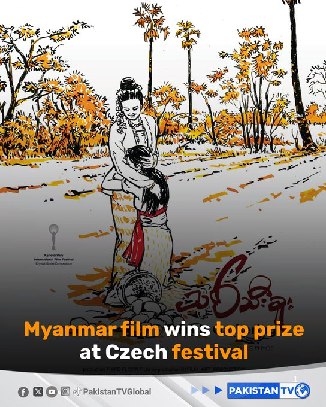

@CBSNews
📝 原文: BREAKING: The U.S. military says it began a third round of strikes on Iran in response to a commercial ship attack.
🇨🇳 译文: 突发新闻：美国军方表示，针对商船袭击事件，美国开始对伊朗进行第三轮打击。

🕒 2026-07-11T23:57:13+00:00
| 来源 | 旧窗口内数量 | 本次新增 | 本次淘汰 | 当前窗口内共有 |
|---|---|---|---|---|
| 推文 + Dawn 新闻 | 0 | 39 | 0 | 39 |
| ARY News | 0 | 0 | 0 | 0 |
注：淘汰数 = 旧窗口内数量 + 本次新增 - 当前窗口内共有













暂无文章。